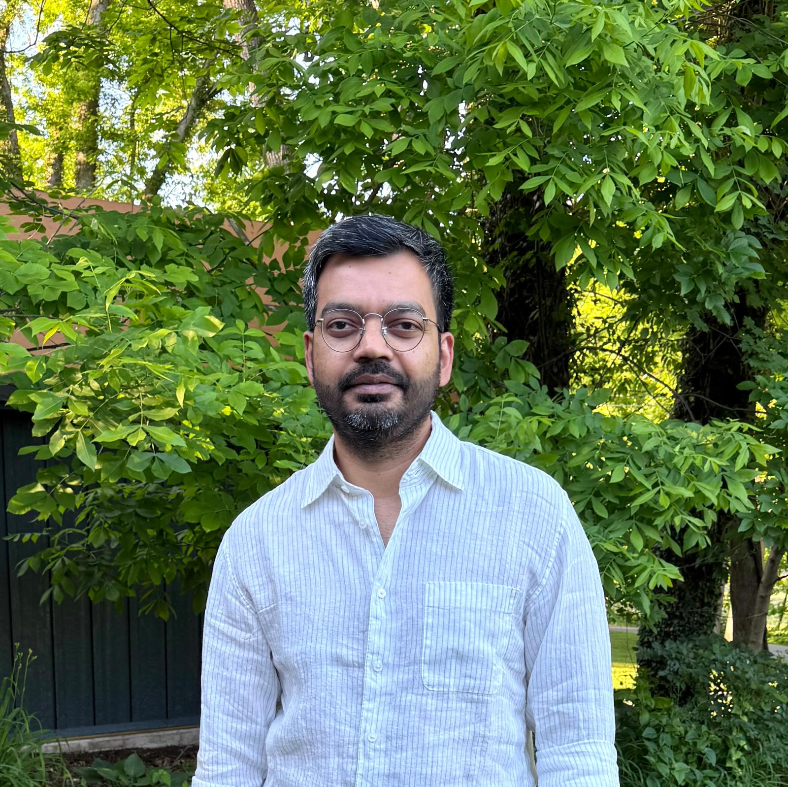
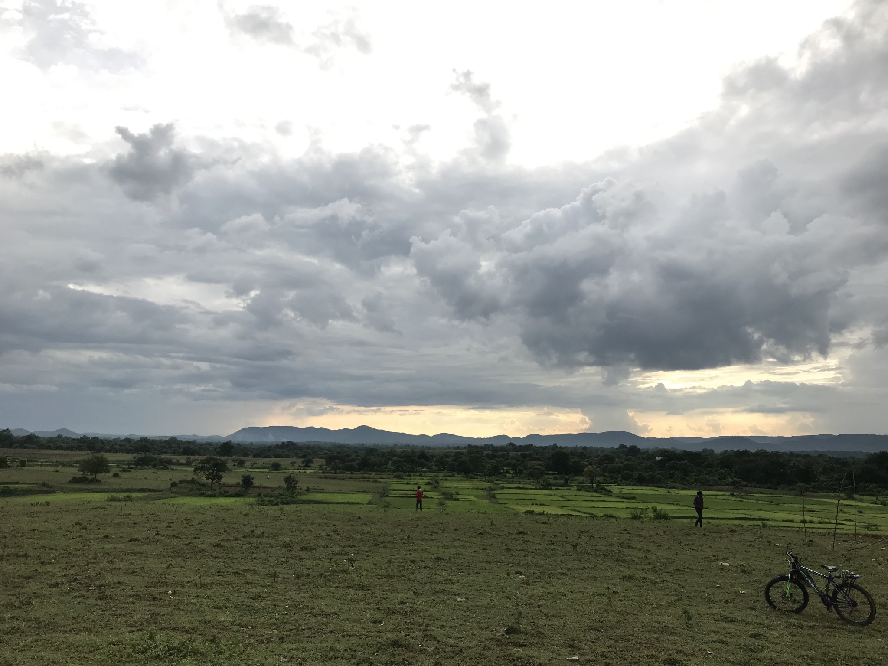

Jay Prakash Sharma
Postdoctoral Research Fellow
Center for the Advanced Study of India
University of Pennsylvania
I am a sociocultural anthropologist working at the intersections of environmental anthropology, political anthropology, and Indigenous Studies. My research examines how histories of resource extraction and environmental change shape Indigenous political life, citizenship, and belonging in contemporary India. Drawing on ethnographic research among Ho Adivasis in eastern India, I study the enduring effects of extraction on everyday politics, encounters with the state, and Indigenous experiences of mobility.


Research Interests
Extraction and Its Afterlives · Indigenous Politics · Bureaucracy and Citizenship · Democracy · Environmental Change and Mobility